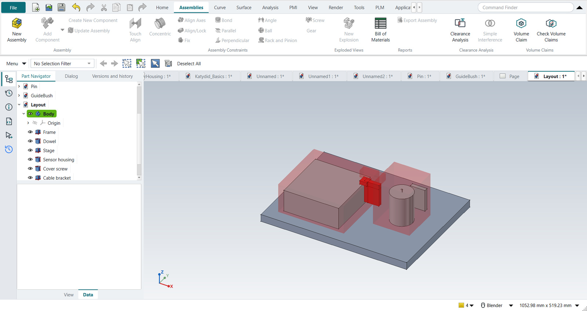
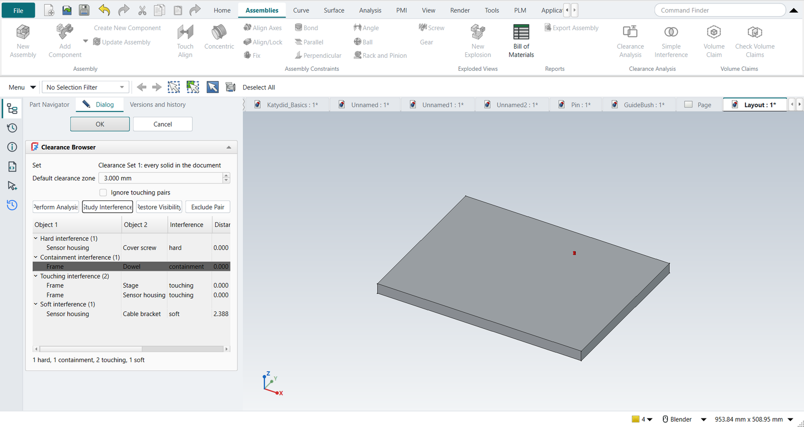

Tutorial U: Volume claims and assembly clearance
| Source |
NX’s Assembly Clearance (Analysis › Assembly Clearance › Perform Analysis; the Clearance Browser; soft, touching, hard and containment interferences); the layout is ours |
| You learn |
Volume Claim, keep-out, Check Volume Claims, Clearance Analysis, the clearance zone, Study Interference, Exclude Pair |
| Sizes |
A 400 × 300 × 20 frame; a 150 × 150 × 60 stage; a Ø60 sensor housing; a 40 × 10 × 60 cable bracket; a Ø6 dowel; an M4-sized cover screw |
Step by step
1. The layout and its claims
The parts are made by script: boxes and cylinders stand in for the modules. For each module select its parts and click Assemblies › Volume Claim, then type the owner, the size and the corner:
| Claim | Members | Space |
|---|---|---|
Structure |
frame, dowel |
400 × 300 × 20 at 0, 0, 0 |
Stage |
stage |
180 × 170 × 80 at 30, 30, 20 |
Sensor |
housing, cover screw, cable bracket |
100 × 100 × 120 at 250, 100, 20 |
Optics (keep-out, margin 2) |
none |
60 × 20 × 20 at 190, 140, 90: the beam path |
2. Check Volume Claims
Assemblies › Check Volume Claims finds four problems:
-
the stage’s claim and the beam path’s keep-out share space (OVERLAP);
-
the cable bracket sticks out of the sensor’s claim (OUTSIDE);
-
it enters the stage’s claim and the beam path (INTRUSION, twice).
The offending volumes are drawn in red.

3. Fixed by the owners
The optics designer raises the beam path to 110 mm; the sensor team moves its bracket into its own claim. Check Volume Claims again: no findings.

4. Assembly Clearance
With nothing selected, Assemblies › Clearance Analysis: a clearance set of every part. Clearance zone 3 mm, Perform Analysis:
| Pair | Kind | Why |
|---|---|---|
cover screw / sensor housing |
hard |
the screw is modelled without its tapped hole: 4 mm penetration |
dowel / frame |
containment |
the dowel is modelled inside the frame, without its hole |
stage / frame, sensor housing / frame |
touching |
they stand on the frame |
cable bracket / sensor housing |
soft |
2.4 mm apart, inside the 3 mm zone |

5. Study, restore, exclude
Pick the dowel’s row and click Study Interference: only the dowel, the frame and the interference volume stay shown. Restore Visibility brings the rest back. The screw’s thread engagement is intended: pick its row and click Exclude Pair. The analysis runs again; the hard interference is listed as Gone, and the rule stays in the set for the next run.

The replay
| # | In the book (NX) | In FreeCAD NX-Style | Result | Notes |
|---|---|---|---|---|
U1 |
The layout: frame, stage, sensor housing with its cover screw and cable bracket, a dowel |
modelled by script (the exercise is the space management) |
same |
boxes and cylinders stand in for the modules' parts |
U2 |
Claim for the structure: frame and dowel |
Frame, Dowel selected + ribbon 'Assemblies › Volume Claims > Volume Claim'; owner, size, corner typed; MB2 = OK |
differs |
Claim Structure: Keep-in, 400 x 300 x 20 at (0, 0, 0); NX has no volume claims (its Assembly Clearance checks parts against parts) |
U3 |
Claim for the stage module |
Stage selected + ribbon 'Assemblies › Volume Claims > Volume Claim'; owner, size, corner typed; MB2 = OK |
differs |
Claim Stage: Keep-in, 180 x 170 x 80 at (30, 30, 20); NX has no volume claims (its Assembly Clearance checks parts against parts) |
U4 |
Claim for the sensor module: housing, cover screw, cable bracket |
Sensor housing, Cover screw, Cable bracket selected + ribbon 'Assemblies › Volume Claims > Volume Claim'; owner, size, corner typed; MB2 = OK |
differs |
Claim Sensor: Keep-in, 100 x 100 x 120 at (250, 100, 20); NX has no volume claims (its Assembly Clearance checks parts against parts) |
U5 |
Keep-out for the optical path, with a 2 mm margin |
nothing selected + ribbon 'Assemblies › Volume Claims > Volume Claim'; owner, size, corner, margin typed; MB2 = OK |
differs |
Claim Optics: Keep-out, 60 x 20 x 20 at (190, 140, 90), margin 2.0; NX has no volume claims (its Assembly Clearance checks parts against parts) |
U6 |
Check Volume Claims |
ribbon 'Assemblies › Volume Claims > Check Volume Claims' |
differs |
Cable bracket (Claim Sensor) enters Claim Stage: 6000.0 mm³; Cable bracket sticks out of Claim Sensor: 24000.0 mm³ outside; Cable bracket (Claim Sensor) enters Claim Optics or its 2 mm margin: 4800.0 mm³; Claim Stage and Claim Optics claim the same 4000.0 mm³. The offending volumes are drawn in red |
U7 |
The optics designer raises the beam path to 110 mm; the sensor team moves its cable bracket into its own claim |
the keep-out’s and the bracket’s Placement |
differs |
in NX the bracket would be moved with Move Component; the claim’s placement is a property |
U8 |
Check Volume Claims again: every part inside its claim, no intrusion, no space claimed twice |
ribbon 'Assemblies › Volume Claims > Check Volume Claims' |
differs |
no findings |
U9 |
Assemblies > Clearance Analysis: a clearance set of every part, zone 3 mm, Perform Analysis |
ribbon 'Assemblies › Clearance Analysis > Clearance Analysis', 3 typed, 'Perform Analysis' |
differs |
{'hard': 1, 'containment': 1, 'touching': 2, 'soft': 1}; Cable bracket/Sensor housing soft (2.39 mm); Cover screw/Sensor housing hard (penetration 4.00, 62.8 mm³); Dowel/Frame containment (penetration 6.00, 424.1 mm³); Frame/Sensor housing touching (0.00 mm); Frame/Stage touching (0.00 mm). NX: the same four kinds; FreeCAD had only Part > Check Geometry and booleans |
U10 |
Study Interference on the dowel in the frame, then Restore Visibility |
row picked in the browser + 'Study Interference', 'Restore Visibility' |
same |
shown while studying: ['Clearance interferences', 'Dowel', 'Frame']; NX: MB3 > Study Interference and Restore Component Visibility |
U11 |
Exclude Pair: the screw’s thread engagement is intended; the analysis runs again |
hard row picked + 'Exclude Pair' |
same |
{'hard': 0, 'containment': 1, 'touching': 2, 'soft': 1}; gone since the last run: [{'gone': 'Part003|Part004'}]; the rule ['Part003|Part004=exclude'] is kept in the set’s PairRules by object name (a renamed part keeps it), so the next check after a design change skips it too |
U12 |
OK: the clearance report |
MB2 = OK |
same |
the clearance set stays in the Part Navigator; double-click it to run it again |
| Result | Means |
|---|---|
same |
The book’s NX steps work as written. |
differs |
It works, but the FreeCAD way is different; the notes say how. |
limit |
The book’s way fails in FreeCAD itself; a workaround follows in the next steps. |
missing |
FreeCAD has no such function; a stand-in follows. |
skipped |
Not replayed; the notes give the reason. |
FAILED |
Did not work. |